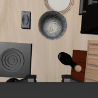
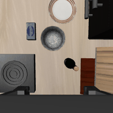

101 эпизодов в метриках · n=1 повтор на (сцена × вариант × модель)
env.check_success()Вычитание gap_en_paraphrase — ключевой контроль: он убирает эффект
«инструкция просто непривычная» и оставляет только языковой. CI по SR —
интервал Уилсона (корректен у краёв 0% и 100%), по en_canonical — бутстрап, 2000 итераций.
| en_canonical | en_paraphrase | mt_russian | ru_literal | ru_case_swap | ru_negation | code_switch | |
|---|---|---|---|---|---|---|---|
| GreenVLA-R2 (bridge, RL-aligned) | 1/2 50% [9;91] | — | — | — | — | — | — |
| OpenVLA-OFT | 15/16 94% [72;99] | 15/16 94% [72;99] | 9/16 56% [33;77] | 9/16 56% [33;77] | 4/4 100% [51;100] | 8/15 53% [30;75] | 14/16 88% [64;97] |
Исключены из метрик: SmolVLA, pi0, pi0.5 — их эпизоды собраны по обе стороны от правки общего model-server, смешивать две конфигурации инференса в одно число нельзя (annotate_provenance()).
ru_case_swap — намеренно перевёрнутая инструкция
(«поставь жёлтый на зелёный» при success-предикате «зелёный на жёлтом»).
Модель, выполнившая её верно, засчитывается как провал: это зонд на
чувствительность к порядку, а не задача. В агрегат по модели не входит.
| вариант | gap, п.п. | Δlang, п.п. |
|---|
| вариант | gap, п.п. | Δlang, п.п. |
|---|---|---|
| mt_russian | +37.5 | +37.5 |
| ru_literal | +37.5 | +37.5 |
| ru_case_swap | -6.2 | -6.2 |
| ru_negation | +40.4 | +40.4 |
| code_switch | +6.2 | +6.2 |
анимация всего эпизода: agentview и wrist (где есть)
en_canonical · OpenVLA-OFT · успех · 119 шагов
code_switch · OpenVLA-OFT · negation_error · 300 шаговmt_russian · OpenVLA-OFT · no_action_or_timeout · 300 шаговen_canonical · OpenVLA-OFT · relation_binding_error · 300 шагов